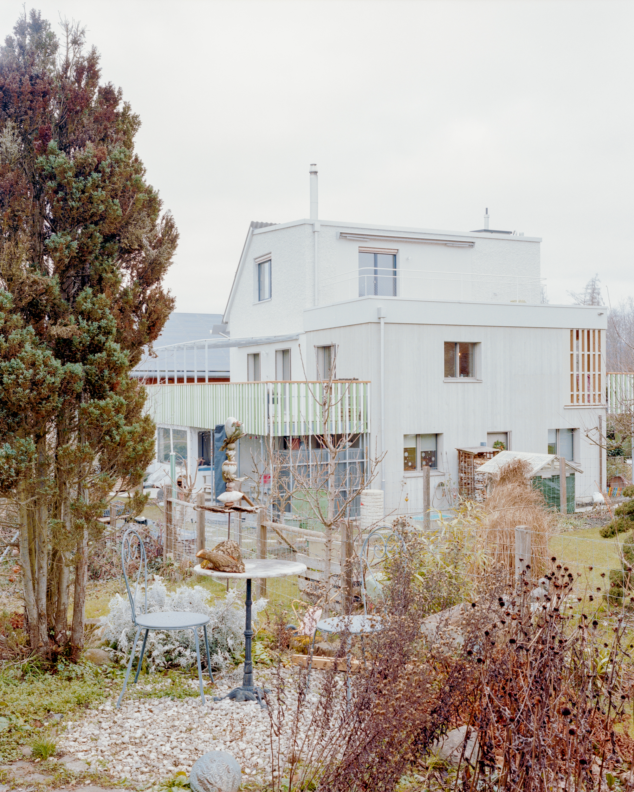
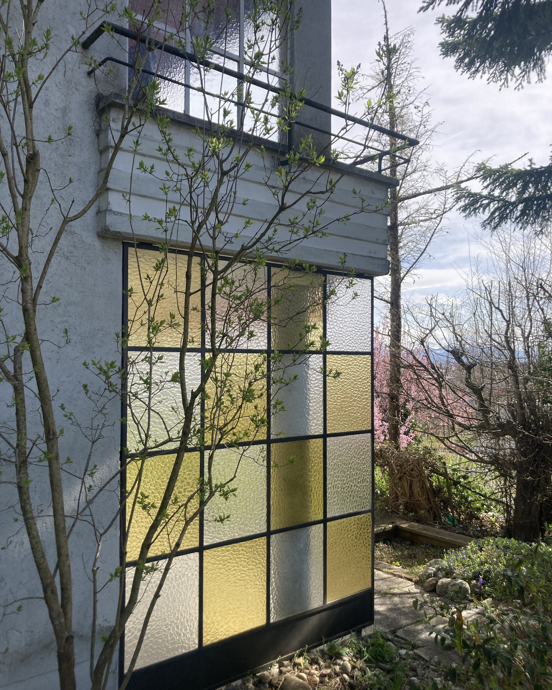
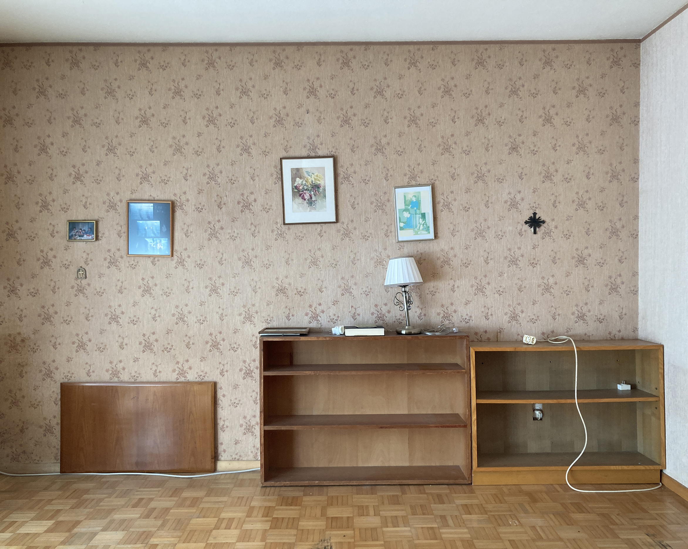
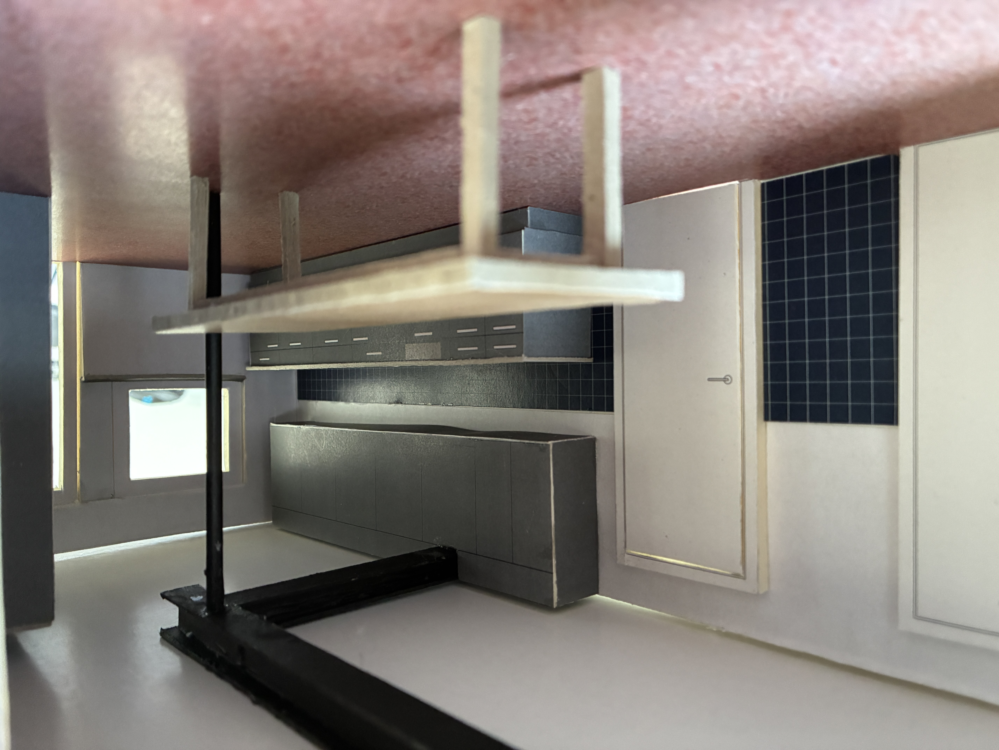
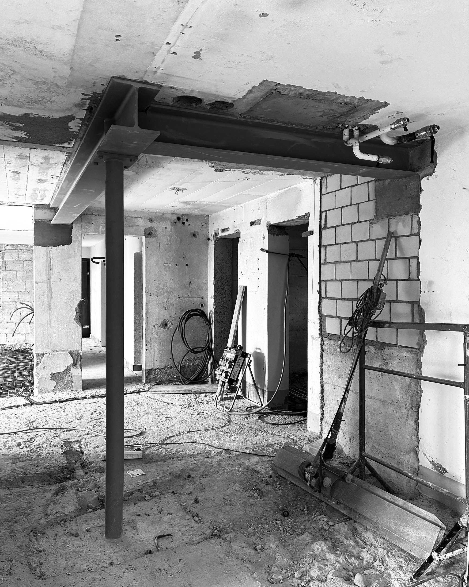
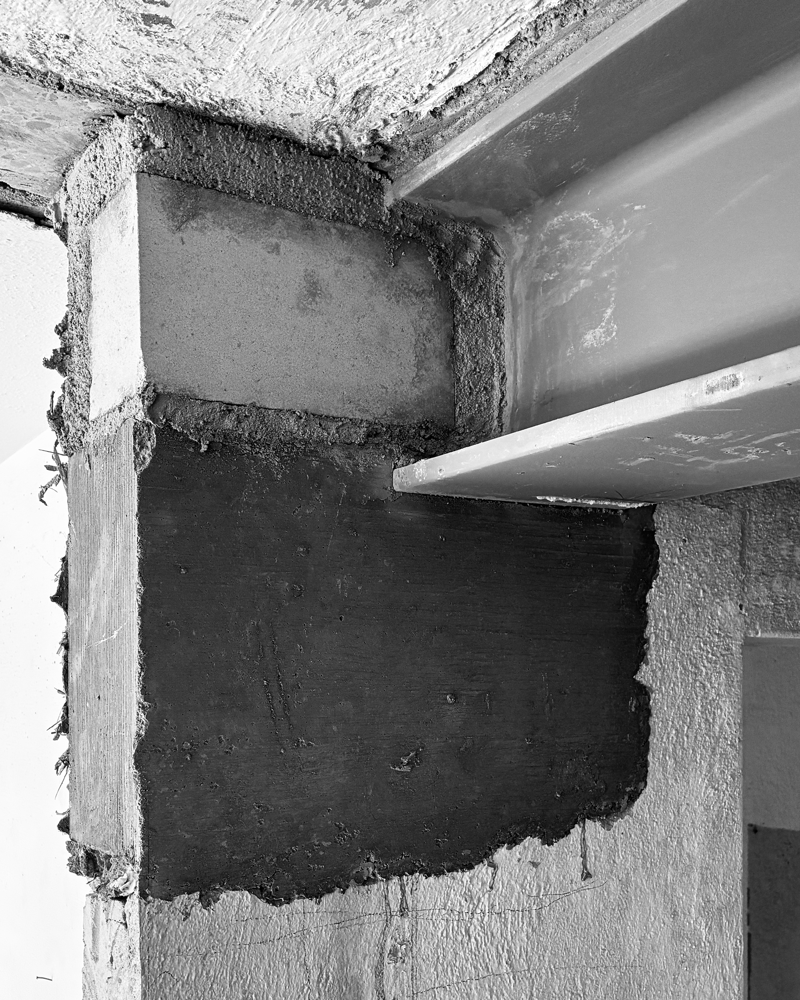
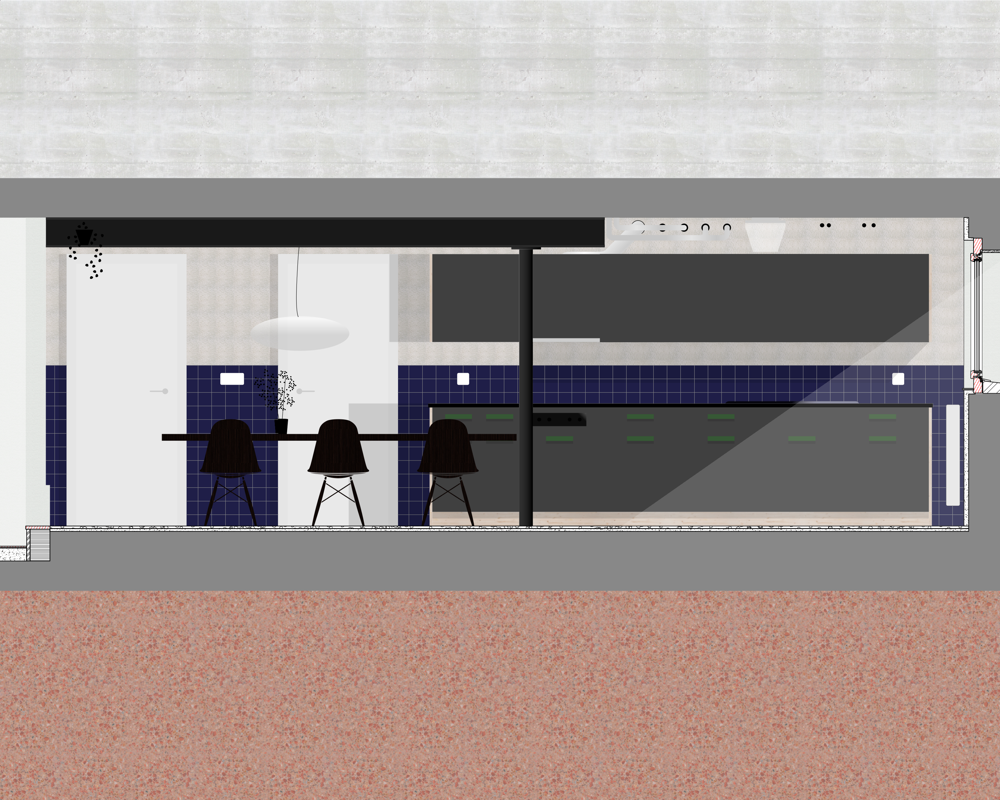
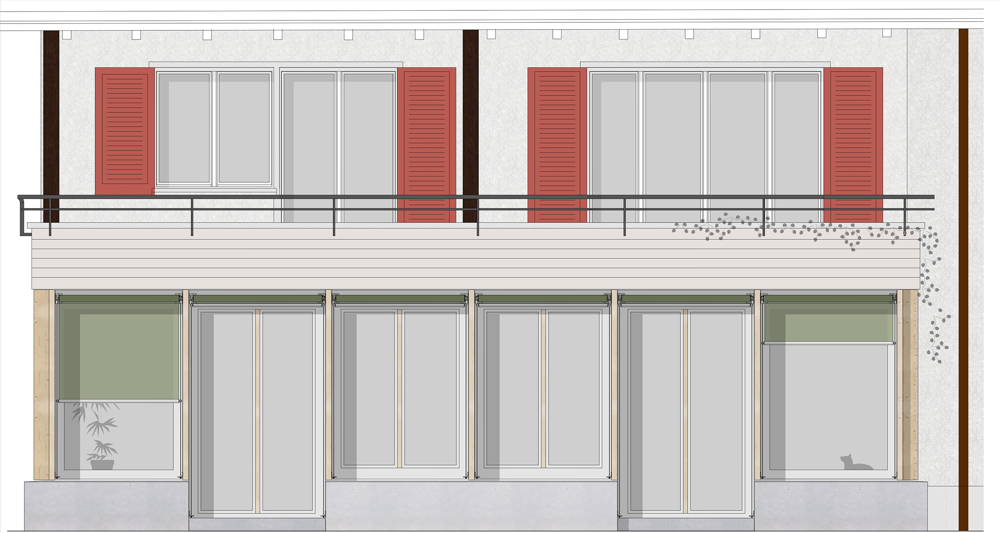
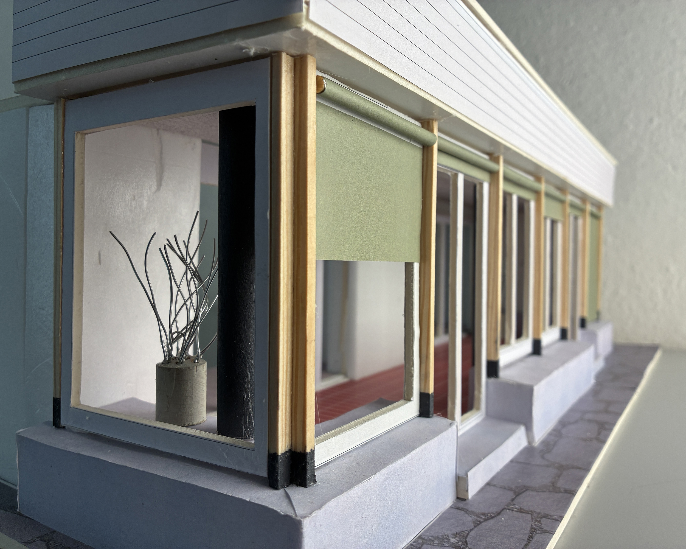
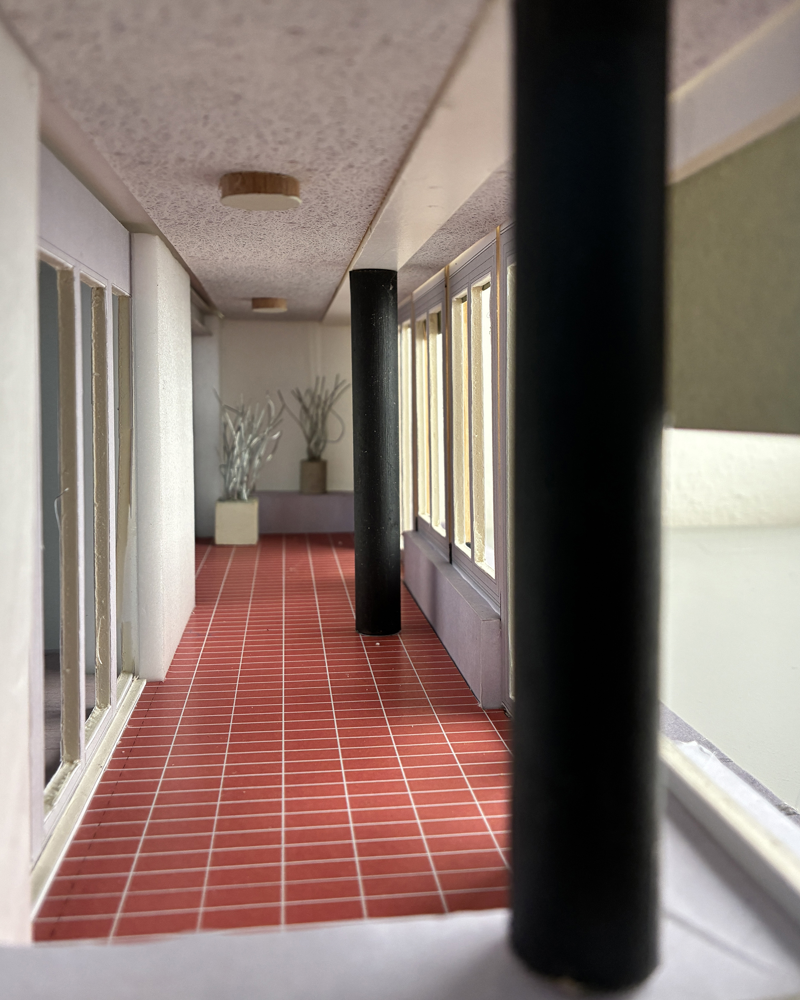

---------------------------------------------------
Sander Lückers Architektur GmbH
c/o Birmensdorferstrasse 604
CH-8055 Zürich
info@sanderlueckers.ch
+41 77 475 33 59
instagram
---------------------------------------------------
Dietikon
Aufstockung
Direktauftrag
2023-2024
abgeschlossen
Nachhaltigkeit durch Bestandserhalt, Verzicht, Zirkulär bauen
Verwendung von ökologischen Baumaterialien
Ganzheitlicher Leistungsbereich von Studie bis örtliche Bauleitung
Projektführung auf Basis von klarer Kommunikation im kontinuierlichen Dialog
Netzwerk an vertrauten Planern und Unternehmern für effiziente Umsetzung












Werdegang
1999-2006 Master of science in Architecture, Delft University of Technology
2007-2010 Angestellt bei One Architecture BV
2010-2013 Angestellt bei Spillmann Echsle Architekten AG
2013-2021 Angestellt bei Giuliani Hönger Architekten AG
2021-2023 Angestellt bei Conen Sigl Architekten GmbH
2023 Gründung Sander Lückers Architektur GmbH
Adresse
Post & c/o Birmensdorferstrasse 604, 8055 Zürich
Arbeitsplatz im Studio-G45, Grubenstrasse 45, 8045 Zürich
Profil und Werte
Sander Lückers Architektur GmbH fokussiert sich auf Umbauten für private Auftraggeber. Gesellschaftliche Aufgaben wie Bestandserhalt,
nachhaltiges Bauen und sparsamer Ressourceneinsatz werden mit der jeweiligen Bestandslage und den Gegebenheiten vor Ort verknüpft.
Die Widerspenstigkeit des Bauens im Bestand und der kontinuierliche Dialog während des Projekts erfordern eine robuste Gestaltung, die laufend Änderungen ermöglicht.
Wird dieser Prozess gut moderiert, entsteht gemeinsam eine hohe Qualität und ein echtes Unikat.
Meine Expertise deckt alle Phasen der Planung und des Baus ab – von der Studie bis zur örtlichen Bauleitung – und gewährleistet durchgängig hohe Qualität.
Ein sorgfältig aufgebautes Netzwerk aus Planern und Unternehmern ermöglicht eine zielführende, hochwertige und möglichst kostengünstige Umsetzung der Projekte.
Partner
Baubüro Insitu, APW (Baumanagement), Seforb (Hochbau Ingenieur), Bardak, (Fassadenplanung), Bakus (Bauphysik),
TIB (Sanitärplanung), Eicher & Pauli (Heizungs-, Lüftungsplanung), UNAX (Schadstoff Expertise), Zirkular (Kreislaufwirtschaft),
Federico Farinatti (Fotografie), Gavran (Schadstoff Sanierung), Repoxit (Zementböden), Schärer (Holzbau), Bütler (Holzbau),
Ralph Bachmann (Haustechnik), Trust Baut (Gipserarbeiten), Poletti Jäger (Kaminbau), Ryter & Söhne (Platten), Kästners Söhne (Schreinerarbeiten)
Firma
Sander Lückers Architektur GmbH, Zürich. Firmennummer (UID) CHE-237.900.821, Eintragung per 12.06.2023
Sander Lückers ist eingetragener Architekt im Niederländischen Architektenregister unter Nummer 1.070815.022.
Website
Die Inhalte wurden sorgfältig und nach unserem aktuellen Kenntnisstand erstellt, dienen jedoch nur der Information und entfalten keine rechtlich
bindende Wirkung. Wir behalten uns vor, die Inhalte vollständig oder teilweise zu ändern oder zu löschen. Alle Angebote sind freibleibend und
unverbindlich. Alle auf dieser Website dargestellten Inhalte, wie Texte, Fotografien und Marken sind durch die jeweiligen Schutzrechte (Urheberrechte,
Markenrechte) geschützt. Die Verwendung, Vervielfältigung usw. unterliegen unseren Rechten oder den Rechten der jeweiligen Urheber bzw.
Rechteverwalter. Downloads und Kopien dieser Seite sind nur für den privaten, nicht kommerziellen Gebrauch gestattet.
Diese Webseite nutzt keine Cookies. Die Sander Lückers Architektur GmbH zeichnet keine personenbezogenen Daten auf und gibt sie auch nicht an Dritte weiter.
Die Sander Lückers Architektur GmbH kann nicht ausschliessen, dass der externe Hosting-Service möglicherweise aus technischen Gründen personenbezogene Daten wie die IP-Adresse speichert.
Dies liegt im Verantwortungsbereich des Webhosters.
Programmierung © Astrid Lanz, Inhalte © Sander Lückers Architektur GmbH